Proyecto EDA · Data Science Bootcamp
Redes sociales, IA y comprensión lectora de los jóvenes europeos
Andoni Valverde
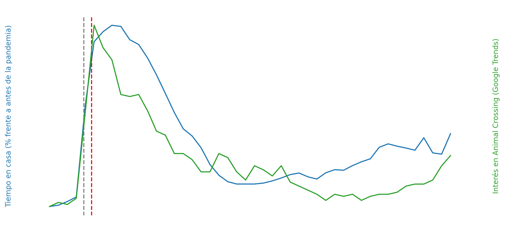
20 de marzo de 2020: sale Animal Crossing, seis días después del estado de alarma.
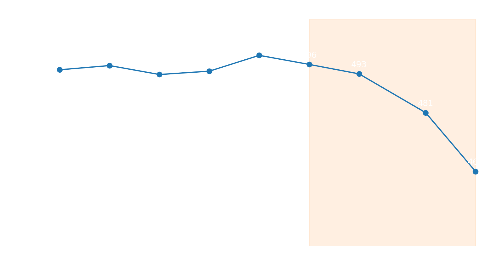
Los informes de lectura han dado resultados estables durante los últimos años entre 493 y 499 puntos.
Desde 2018: han sufrido una bajada de hasta −30 puntos.
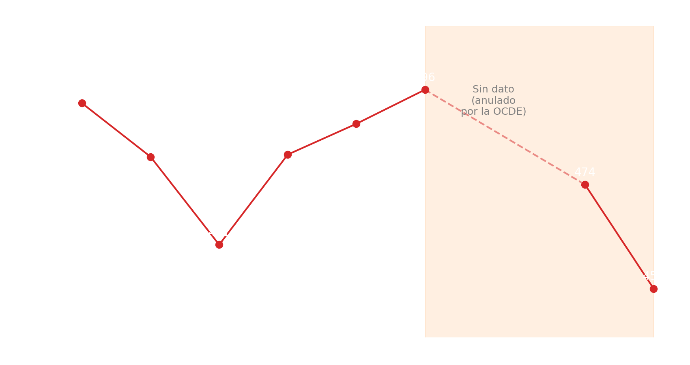
España: 0 puntos desde 2015
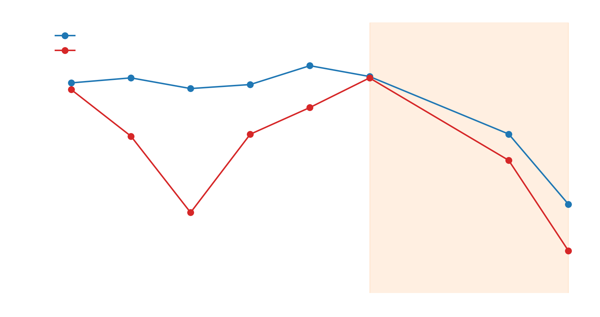
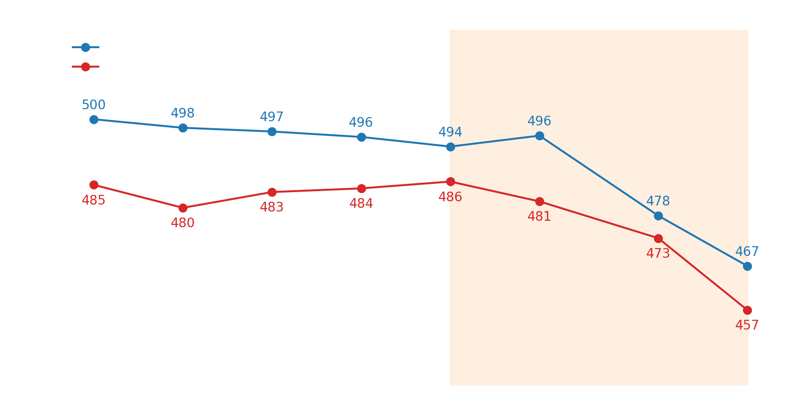
Los datos siguen un mismo patrón: el nivel de matemáticas era estable hasta el año 2018.
Europa: -29 puntos.
España: -24 puntos.
Tanto España como Europa siguen el mismo patrón en la caída de los informes. ¿Problema de lectura… o de atención en general?
Mapa de calor, Cuanto más rojo esté cada país, tiene un mayor problema con las redes según el informe (HBSC 2022).
Correlación de datos: se puede observar la caída en los informes de matemáticas y lectura en su conjunto.
Irlanda y Estonia Casos especiales que se tratan como Outliers en este estudio.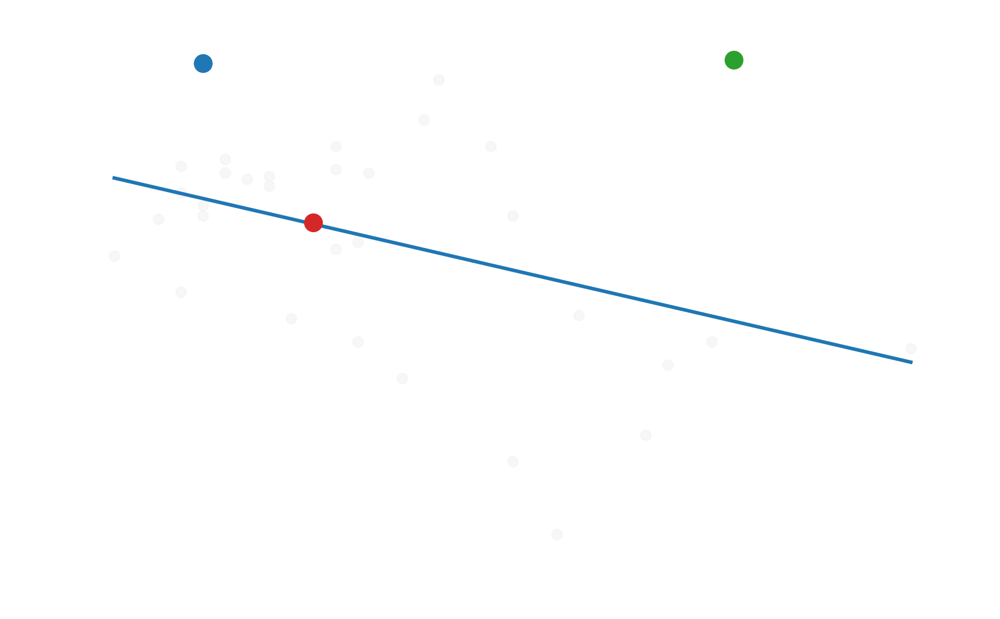
34 países: Cuanto más uso intensivo de las RRSS, peores datos de lectura en el informe PISA.
r = −0,40: relación moderada. Muestra una tendencia progresiva.
Aunque hay algunos casos excepcionaes como Irlanda y Estonia
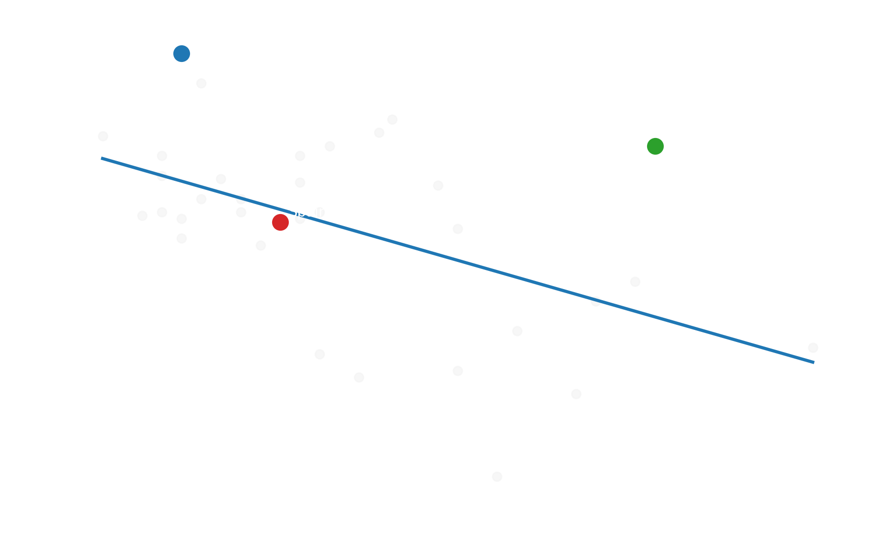
r = −0,52: Muestra una de las relaciones más fuertes del análisis
No parece solo un problema de leer, sino de concentración.
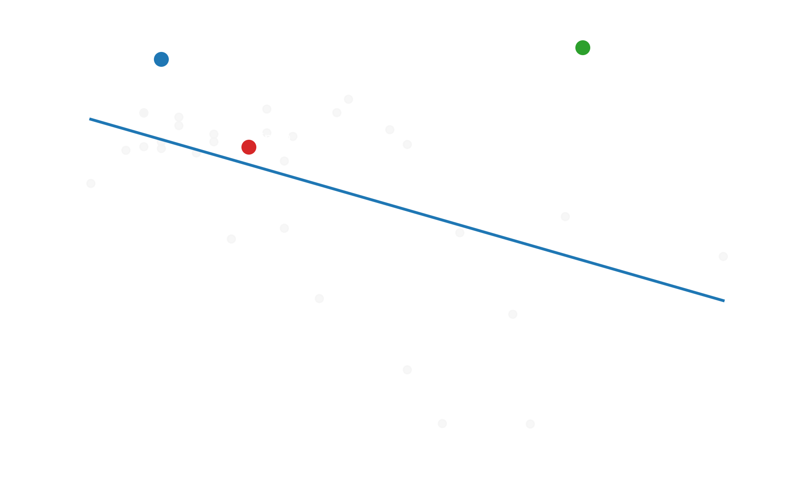
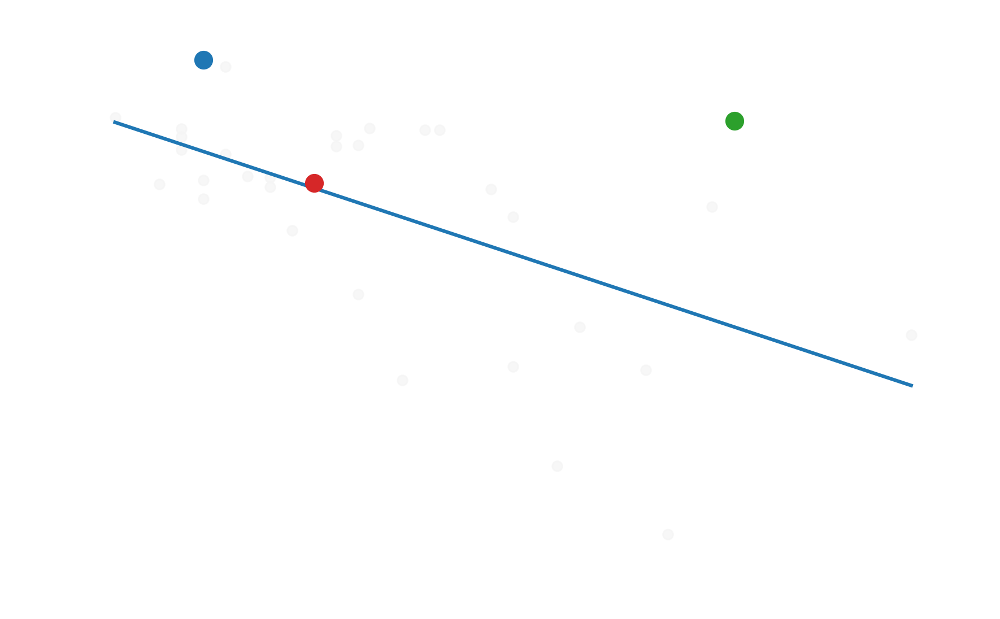
Con PISA 2022 ya estaba ahí: los datos mostraban una tendencia descendiente de las capacidades de los jóvenes dentro del auge del Scroll infinito
Son dos ediciones distintas con el mismo patrón
Tiene uno de los usos más problemáticos con Redes de Europa, pero muestra grandes datos en Lectura.
El país posee una estrategia nacional de lectura desde 2011 y una fuerte cultura lectora.
Uno de los países más digitales… y de los mejores lectores de Europa.
Equidad y docentes que deciden cuándo usar la tecnología.
La educación en el uso de RRSS es importante a edades tempranas.
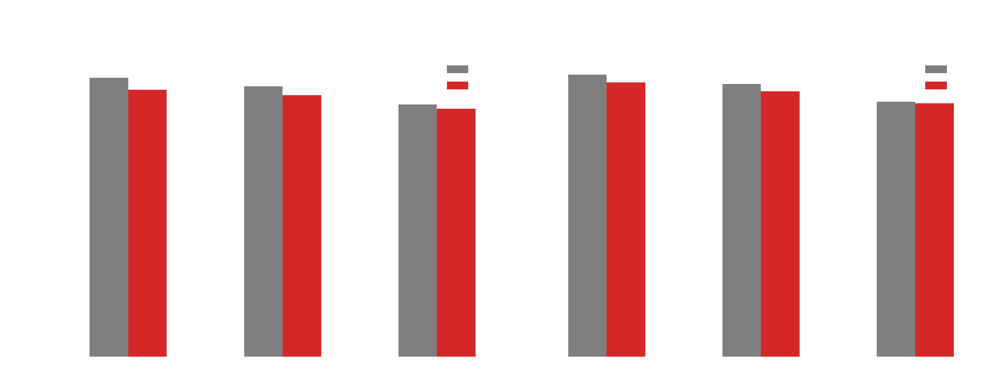
Bajo uso: 481 → 460 (−21)
Uso medio: 466 → 450 (−16)
Alto uso: 435 → 428 (−7)
Los países que más redes usan siguen abajo pero Pero los países que menos problemas con redes tienen, sufren una caída más acentuada..
2015 → 2018: En esta franja de años, la UE apenas nota cambios en los informes (496 → 493).
2022, año de popularización de TikTok, Reels, Shorts… la caída se acelera: 481 en 2022 y 463 en 2025.
La caída se agrava año a año.
2026: conclusiones preliminares de la UE contra TikTok y Meta por diseño adictivo. Aún sin multa.
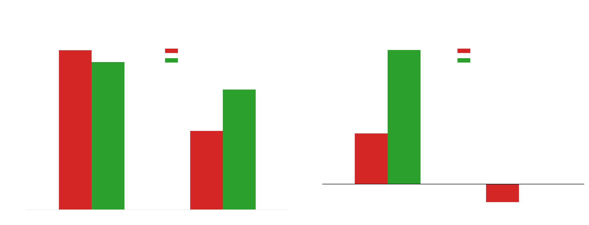
Ejercitando la memoria: a medio plazo se demuestra que el esfuerzo en lectura mejora los resultados frente a las lecturas rapidas sin retención real de conocimientos..
Uso de Inteligencia Artificial Resultados del estudio demuestran que el uso responsable mejora los resultados académicos. El uso con intención de resultados instantáneos perjudica a largo plazo.
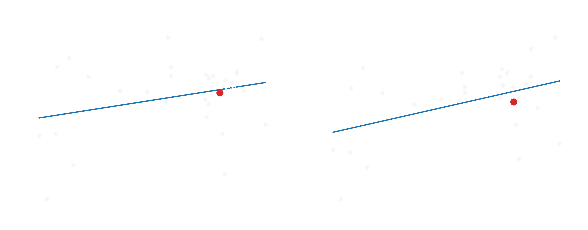
Los países donde se ha generalizado el uso de IA en el ámbito académico: los jóvenes muestran unos mejores notas (r = +0,30 en lectura y +0,45 en matemáticas).
¿La IA sube la nota? No podemos aventurarnos a esa afirmación.yCada país es un caso único, y la fuerza de la digitalización no se aplica por igual.
Grecia y Estonia usan IA casi por igual (83 %)… y les separan 76 puntos en lectura.
| 1. Redes y lectura | Sí, con fuerza moderada |
| 2. Scroll y caída | A medias |
| 3. IA según el uso | Sí, según los estudios |
No es la pantalla, es el uso.
Este proyecto ha tenido colaboración de Claude como tutor, no como único autor.